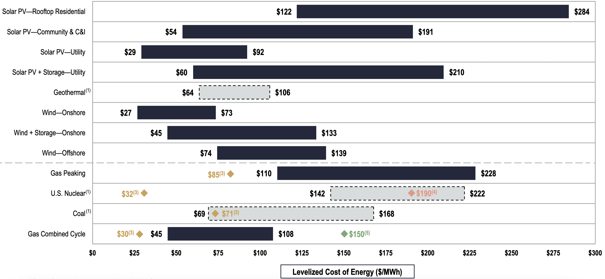
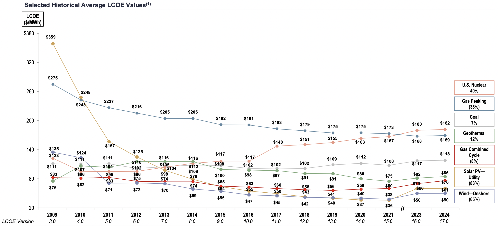
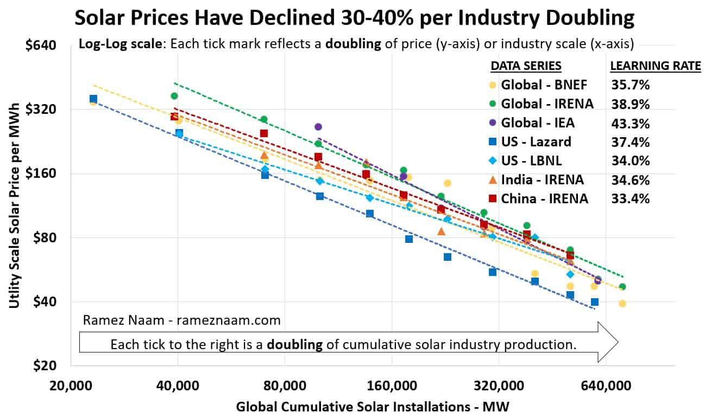

My Big Bet on Solar
"What important truth do very few people agree with you on?"
This is the question Peter Thiel asks in the opening chapter of his book Zero to One: Notes on Startups, or How to Build the Future, and I think it's one worth asking regardless of your feelings towards entrepreneurship. It's easy to imagine the future as a slightly more advanced version of the present, but the reality is that the future is often determined by big, step-function changes that fundamentally alter our relationship with the world. Nassim Taleb discusses this phenomenon in his book The Black Swan: The Impact of the Highly Improbable, and it's safe to say that those who can foresee these contrarian paradigm shifts stand to gain the most by placing large bets on these ideas. Bets don't necessarily have to be monetary (although contrarian truths make for killer investments); they can be bets with time and/or reputation. If you sincerely believe a part of the future to be true that others don't see yet, you can justify staking any of the previously mentioned assets to realize your vision.
This is my big bet:
By 2050, >90% of humanity's primary energy consumption will come downstream of solar photovoltaic cells, whose rapid cost decrease will unlock a new paradigm of intermittency-adapted processes.
Let's start with the facts. Utility-scale solar photovoltaics (PV) is already one of the cheapest energy sources available to humanity. Evenly comparing costs between energy sources isn't trivial since they have different properties (lifetime, CAPEX, OPEX, capacity factor, etc.), but levelized cost of electricity (LCOE) is a good start. According to the June 2024 Lazard report, utility solar (without storage) at $61/MWh is cheaper on average than all non-renewable energy sources. On the renewables side, solar is slightly more expensive than onshore wind (~$50/MWh) and significantly less expensive than other alternatives. Again, these cost comparisons will vary on a case-by-case basis, but, as a first approximation, we have reasonably strong evidence that solar is already better than or competitive with any other energy generation choice.
But that's just today. To get the full picture, we should investigate the historical evolution of solar costs relative to alternatives to understand how these technologies are developing.
The salient trend from this graph is the unusually rapid decrease in LCOE for solar PV (in yellow) over the past 15 years. Comparing this development with the mild decreases for other renewables or even the stagnation/slight price increase for non-renewables uncovers the real engine behind solar's path to dominance: massive learning rate.
Learning rate in this context refers to the percentage decrease in cost per doubling of cumulative production for a given technology. This is similar to the exponential trend from the popular Moore's Law, which states that the number of transistors on an integrated circuit doubles every 2 years. However, Moore's Law portrays time as the driving factor for improvement, when a better curve might consider cumulative production to be more indicative of cost decline. This relationship is known as Wright's Law, and applies more generally to many technologies (including explaining computing better than Moore's Law!). Solar PV is no exception to Wright's Law, whose cost decline since its inception at Bell Labs in 1954 has followed a steady learning rate of 30-40%.
Learning rate isn't simply an empirical observation of technological development; it's fundamentally rooted in supply-demand economics. Low-cost panels increase demand, which leads to increased cumulative production. As production capacity increases, we learn how to make solar panels more efficiently (less time and less cost), which further reduces prices and drives demand. The energy market for solar is nowhere near saturated (solar sources about 2-3% of global primary energy consumption), so unless demand stagnates because of regulation (unlikely due to solar's cost and importance to climate objectives) or the sun disappearing (very unlikely due to…physics), the demand side of this positive feedback loop will hold.
The learning rate also assumes there is room to improve on the supply side. The maximum theoretical efficiency of a single P-N junction solar cell is ~33%, but commercial panels today are only 15-22% efficient. Innovation doesn't have to just apply to the panels themselves, however, as solar PV costs incorporate ancillary expenditures—racks, inverters, permitting, EPC overhead, labor, etc.—all of which can be innovated on to drive costs down. In fact, panels have gotten so cheap that they only represent 1/3 of the final plant cost. All this is to say that there is still plenty of room for the learning rate to continue improving supply costs.
These factors explain why solar PV has enjoyed an incredible price decrease despite many forecasters predicting its stagnation over the past several decades. The learning rate phenomenon is a reflection of how humans develop technology: inventions generally start small and grow with economies of scale until the technological benefits can be conferred to the masses. Technologies that are more conducive to mass manufacturing will see large market adoption quicker than ones that require esoteric supply chains. On this note, solar PV has a few unique characteristics that make it the ideal energy source for the future:
- Free fuel source. Good luck beating a free, zero-maintenance, zero-waste fusion reactor that continuously sends us more than 10,000x our current energy demand!
- Low cycle times. The time it takes to integrate improvements on the supply side into an installed solar farm is the fastest among all generation sources.
- No moving parts. Solar farms are easy to build and maintain, given that there are no moving parts (except for optional solar motion trackers).
- Flexible scale. Solar modules stack up to create farms of any size, from moderate MW-scale farms to large, GW-scale plants. This gives developers more flexibility to take on distributed projects of different payback periods compared to other plants that only make economic sense at a large, centralized scale.
This is ultimately why I believe solar will overwhelmingly dominate our energy mix in 25 years. Drilling and fracking will phase out as it eventually becomes cheaper to synthesize oil and gas directly from solar PV energy. Nuclear plants suffer from long payback periods (although next-gen SMRs could be useful for niche applications like submarines or military base camps). Hydropower is geographically constrained and has little room for high learning rates. Geothermal will also struggle to experience high learning rates unless it gets miracles in drilling technology. Wind is likely the best alternative to solar since they share a lot of the key manufacturing qualities, but wind will find it challenging to beat solar cycle times and match solar's learning rate. Wind may be cheaper today, but exponential price drops in solar will leave wind in a clear second place. Any subsequent nascent technologies like nuclear fusion will need to not only prove their concepts work but also be designed for mass manufacturability before they can scale, by which point solar will have already dominated the market.
This analysis isn't meant to devalue innovation in these other fields. Most non-solar/wind energy sources will still exist in the future, but they will be relegated to rare circumstances where the unique traits of the alternative energy source provide a nominal advantage. Wind will be slightly more prevalent in areas with excellent wind resources and poor solar resources. The default for the rest of the planet will be solar PV. The data is clear: we have a strong economic incentive to pave large sections of Earth's available land area with solar panels. Already in 2024, 553 GW of solar capacity was added globally, compared to 119 GW of wind and 7 GW of nuclear. That's more than 1 MW installed per minute for an entire year!
It's not trivial to call a landslide victory for one energy source among the growing slate of seemingly viable options. The safe option is to claim a roughly even mix of all these sources moving forward in the clean energy transition—even I used to hold this plausible belief. However, humanity has an insatiable hunger for energy, and capitalism is a ruthlessly efficient machine that will exploit the cheapest available source to provide abundant wealth. The dominance of cheap solar PV isn't a curse; it unlocks more energy for all, which directly increases economic productivity and overall human prosperity, all while giving us a fighting chance against climate change.
The biggest objection to solar is intermittency, but evidently, that hasn't stopped demand from curbing out for PV modules (or wind!). Instead, we will see a new paradigm where certain high-energy processes will learn to adapt to a variable energy source. Historically, this has been a bad strategy for most processes that convert energy into value-added goods, since large-scale plants prefer 24/7 operation to improve economic returns. Conventional wisdom professes high-CAPEX, energy-efficient, continuous processes. However, since the cheapest energy source will now be abundant and intermittent, certain processes will improve unit economics by trading energy efficiency for lower CAPEX and taking the hit on low utilization. In other words, energy will become abundant enough to waste on cheap processes that deliver their economic benefits directly to the consumer.
Of course, not every process will want to run intermittently—that's where energy storage comes in. Batteries have a mutually-reinforcing market relationship with solar (yet another reason to bet on solar PV) and have thus been on their own Wright's Law curve with a learning rate of ~23%. For now, only high CAPEX processes (>$1000/kW) can justify battery installation, but that threshold will decline as both solar and lithium-ion batteries get cheaper.
Cheap solar will sustainably provide for most of our primary energy use cases while providing a green dividend (as opposed to a green premium). Solar+batteries with an inverter will provide AC electricity for residential and commercial use (including for the growing AI and data center demand). Cheap DC power will be used to power electrolyzers that create green hydrogen—a versatile energy carrier, chemical feedstock, and reducing agent. That hydrogen can then react with carbon dioxide obtained from direct air capture to produce carbon-neutral synthetic hydrocarbons for less than we currently get them via drilling or fracking. Hydrocarbons are the backbone of our society, providing 81% of our primary energy today and serving as feedstocks for critical materials like plastics, resins, and lubricants. Solar green hydrogen can help synthesize ammonia for fertilizer. Primary materials like iron, aluminum, and silicon (which exist naturally as oxides in the Earth's crust and need to be reduced before they are transformed into useful products) can be processed using solar DC electrolytic reduction, green hydrogen reduction, or occasionally carbothermic reduction using the aforementioned synthetic hydrocarbons. Transportation and heating/cooling will be electrified if possible, or use the solar-synthesized hydrocarbons to provide energy.
This is by no means an exhaustive list of the bounties we would unlock with cheap solar, but it covers the most fundamental pillars of human society today and, incidentally, the largest sources of carbon dioxide emissions.
I've always been fascinated by energy because I think it speaks to the core of what it means to be human. Anatomically speaking, we're not the largest, strongest, or fastest members of the animal kingdom, but our ability to bypass our digestive system to harness energy gave us unprecedented control over the natural world. Each additional energy source unlocked has driven tremendous progress for civilization, from biomass to coal to oil and gas. Solar represents the next step in that sequence, sidestepping inefficiencies like photosynthesis to directly convert solar photons into electricity.
Some policymakers espouse a decrease in energy consumption in the wake of climate change. Not only is this practically infeasible, but it is morally reprehensible. Greater energy consumption drives progress, and it's no surprise that the countries consuming the most amount of energy per capita are also the wealthiest. The industrial revolution has generated an inordinate amount of wealth for the world and significantly increased life expectancy, all while supporting a rapid population boom. Putting a damper on energy consumption directly affects all these trends. While developed countries might be able to afford a decline in energy usage, developing nations need to increase their primary energy consumption to build out their industrial stacks and sustain their citizens. Luckily, solar PV can support this while delivering a cost benefit for choosing a cleaner technology.
Most people don't appreciate the quality of life they have today compared to decades ago. Our world taps into the steady stream of low-entropy energy from the Sun to power industrialized processes that give us wealth beyond the wildest imaginations of our ancestors. The future will continue to develop on the back of the cheapest available energy source. In the distant future, when humans are an interplanetary species and >1.0 on the Kardashev scale, that cheap source might be atomic energy, matter-antimatter annihilation, or something beyond our current understanding of physics. But for now, I'm making my biggest bet on solar PV dominance, based on the contrarian truth that solar energy alone will carry the torch of human progress for the next several generations.